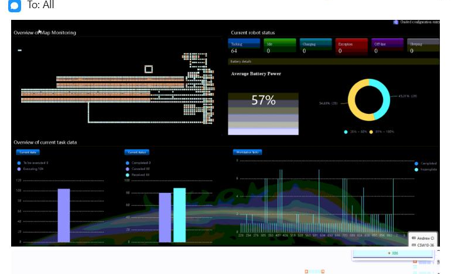
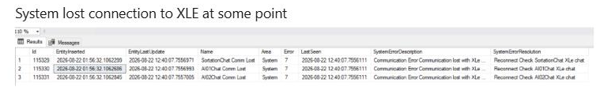
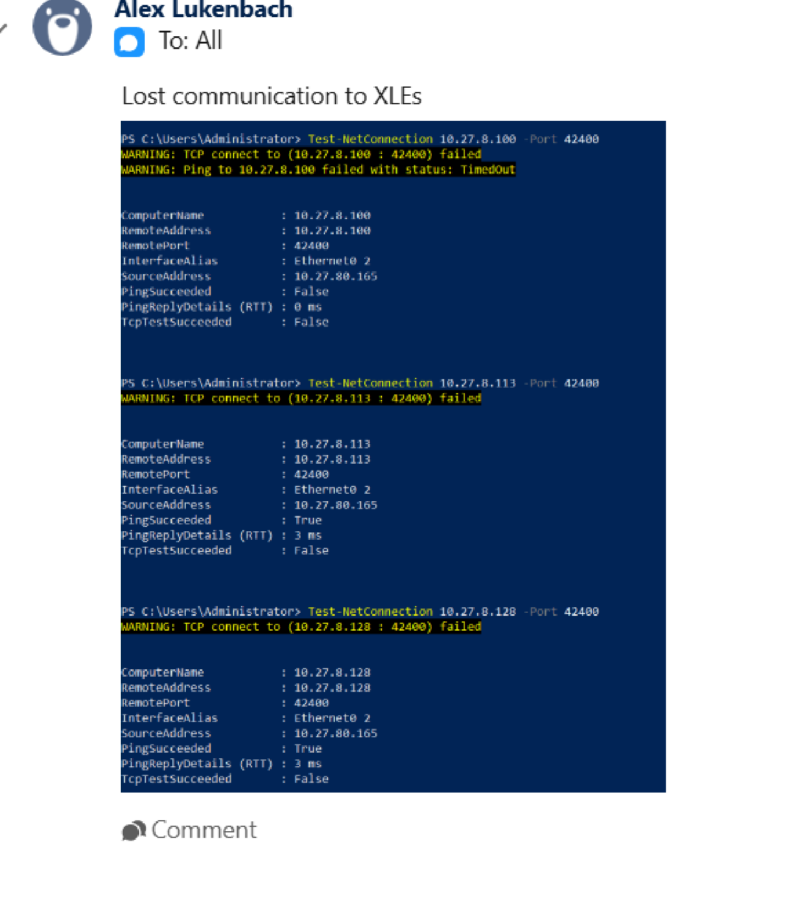
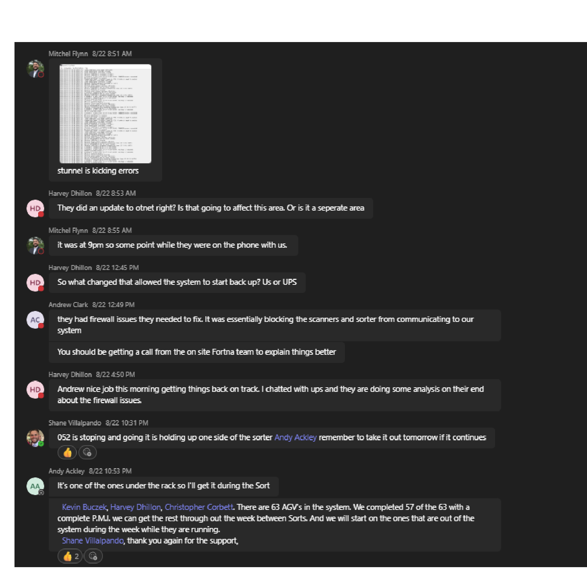

| Procedure ID | proc_xle_communication_loss_diagnostic_v1 |
|---|---|
| Title | Diagnose XLE communication loss using RMS / fleet status UI, Ignition gateway, and S-Tunnel / Chat path |
| Procedure Type | diagnostic |
| Primary Role | L2_support |
| Support Safe | Yes |
| Capability Tags | agv_active_errors |
| Access Surface | rms_ui, ignition_gateway, stunnel |
| Audience Roles | L2_support, L3_support |
| Failure Pattern Tags | api_unresponsive, stunnel_or_chat_down, site_stoppage |
| Validation Status | needs_sme_review |
| Merge Status | source_finalized |
Use the RMS / fleet status UI, Ignition gateway, and S-Tunnel / Chat path at UPS Haslet TX (TXRTH) to compare live AGV and task state with XLE communication and stunnel indicators. The incident showed no reported AGV faults or crashes, 80 canceled tasks, 88 received tasks, repeated XLE communication-loss messages, failed TCP connectivity on port 42400, and stunnel errors. Do not modify firewall or service configuration from this diagnostic procedure.
Use on the live UPS Haslet TX (TXRTH) job when tote exchange, bag-out, or sorter communication is abnormal and the cause may involve XLE communication, abnormal AGV task state, or S-Tunnel / Chat communication errors. Compare RMS / fleet status UI, Ignition gateway, and S-Tunnel / Chat path observations before escalating.




Responsible role: L2_support
Instruction:
In the RMS / fleet status UI for UPS Haslet TX (TXRTH), inspect current robot status, current task data, and the displayed tote-exchange or bag-out operating state. Record whether AGVs are reported as faulted or crashed and record the displayed canceled and received task counts.
Expected result:
The RMS / fleet status UI displays current robot and task values that can be compared with the live tote-exchange or sorter symptom, including whether AGV faults or crashes are reported and the current canceled and received task counts.
Stop or Escalate If:
Responsible role: L2_support
Instruction:
In the Ignition gateway Systems Overview or status view for UPS Haslet TX (TXRTH), check for a current or recent message stating lost communication to XLEs. If the source-documented connectivity diagnostic is available, inspect the result for the documented XLE targets on port 42400 without substituting OCR-uncertain endpoint values.
Expected result:
The Ignition gateway status view shows either an active/recent XLE communication-loss indication or no such indication, and the connectivity diagnostic exposes an observable TCP result for the documented port when run.
Stop or Escalate If:
Responsible role: L2_support
Instruction:
Open the S-Tunnel / Chat path for UPS Haslet TX (TXRTH), inspect the connection list and current error state, and record whether stunnel errors are present. Record whether scanners or the sorter are reported as unable to communicate with the system.
Expected result:
The S-Tunnel / Chat path exposes the current connection/error state and indicates whether stunnel errors or scanner/sorter communication failures are being reported.
Stop or Escalate If:
Responsible role: L2_support
Instruction:
Compare the observations from the RMS / fleet status UI, Ignition gateway, and S-Tunnel / Chat path. Treat a communication-related abnormal state as supported when XLE loss or stunnel errors coincide with tote-exchange or sorter communication failure, including when RMS reports no AGV fault or crash.
Expected result:
The comparison identifies whether the live tote-exchange or sorter symptom coincides with XLE communication loss, failed TCP connectivity on port 42400, stunnel errors, abnormal RMS task counts, or no corroborating communication indicator.
Stop or Escalate If: